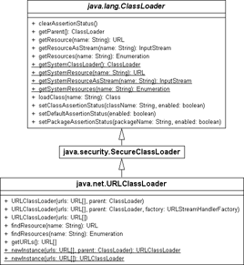

11.5 Klassenlader (Class Loader)
Ein Klassenlader ist dafür verantwortlich, eine Klasse zu laden. Aus der Datenquelle (im Allgemeinen einer Datei) liefert der Klassenlader ein Byte-Feld mit den Informationen, die im zweiten Schritt dazu verwendet werden, die Klasse im Laufzeitsystem einzubringen; das ist Linking. Es gibt eine Reihe von vordefinierten Klassenladern und die Möglichkeit, eigene Klassenlader zu schreiben, um etwa verschlüsselte und komprimierte .class-Dateien zu laden.
11.5.1 Woher die kleinen Klassen kommen
Nehmen wir zu Beginn ein einfaches Programm mit zwei Klassen:
class A
{
static String s = new java.util.Date().toString();
public static void main( String[] args )
{
B b = new B();
}
}
class B
{
A a;
}
Wenn die Laufzeitumgebung das Programm A startet, muss sie eine Reihe von Klassen laden. Sofort wird klar, dass es zumindest A sein muss. Wenn aber die statische main()-Methode aufgerufen wird, muss auch B geladen sein. Und da beim Laden einer Klasse auch die statischen Variablen initialisiert werden, wird auch die Klasse java.util.Date geladen. Zwei weitere Dinge werden nach einiger Überlegung deutlich:
- Wenn B geladen wird, bezieht es sich auf A. Da A aber schon geladen ist, muss es nicht noch einmal geladen werden.
- Unsichtbar stecken noch andere referenzierte Klassen dahinter, die nicht direkt sichtbar sind. So wird zum Beispiel Object geladen werden, da implizit in der Klassendeklaration von A steht: class A extends Object.
Im Beispiel mit den Klassen A und B lädt die Laufzeitumgebung selbstständig die Klassen (implizites Klassenladen). Klassen lassen sich auch mit Class.forName() über ihren Namen laden (explizites Klassenladen).
| Hinweis |
|
Um zu sehen, welche Klassen überhaupt geladen werden, lässt sich der virtuellen Maschine beim Start der Laufzeitumgebung ein Schalter mitgeben – verbose:class. Dann gibt die Maschine beim Lauf alle Klassen aus, die sie lädt. |
Die Suchorte
Ein festes, dreistufiges Schema bestimmt die Suche nach den Klassen:
- Klassen wie String, Object oder Point stehen in einem ganz speziellen Archiv. Wenn ein eigenes Java-Programm gestartet wird, so sucht die virtuelle Maschine die angeforderten Klassen zuerst in diesem Archiv. Da es elementare Klassen sind, die zum Hochfahren eines Systems gehören, werden sie Bootstrap-Klassen genannt. Das Archiv mit diesen Klassen heißt oft rt.jar (für Runtime). Andere Archive können hinzukommen – wie i18n.jar, das Internationalisierungsdaten beinhaltet. Die Implementierung dieses Bootstrap-Laders ist nicht öffentlich und wird von System zu System unterschiedlich sein.
- Findet die Laufzeitumgebung die Klassen nicht bei den Bootstrap-Klassen, so werden alle Archive eines speziellen Verzeichnisses untersucht, das sich Extension-Verzeichnis nennt. Das Verzeichnis gibt es bei jeder Java-Version. Es liegt unter lib/ext. Werden hier Klassen eingelagert, so findet die Laufzeitumgebung diese Klassen ohne weitere Anpassung und Setzen von Pfaden. In sonstige Verzeichnisse einer Java-Installation sollten keine Klassen kopiert werden.
- Ist eine Klasse auch im Erweiterungsverzeichnis nicht zu finden, beginnt die Suche im Klassenpfad (Classpath). Diese Pfadangabe besteht aus einer Aufzählung einzelner Verzeichnisse, Klassen oder Jar-Archive, in denen die Laufzeitumgebung nach den Klassendateien sucht. Standardmäßig ist dieser Klassenpfad auf das aktuelle Verzeichnis gesetzt (».«).
| Hinweis |
|
Es gibt spezielle Bootstrap-Klassen, die sich überschreiben lassen. Sie werden in das spezielle Verzeichnis endorsed gesetzt. Mehr Informationen dazu folgen in Abschnitt 11.5.6. |
11.5.2 Setzen des Klassenpfades
Die Suchorte lassen sich angeben, wobei die Bestimmung des Klassenpfades für die eigenen Klassen die wichtigste ist. Sollen in einem Java-Projekt Dateien aus einem Verzeichnis oder einem externen Java-Archiv geholt werden, so ist der übliche Weg, dieses Verzeichnis oder Archiv im Klassenpfad anzugeben. Dafür gibt es zwei Varianten. Die erste ist, über den Schalter -classpath (kurz -cp) beim Start der virtuellen Maschine die Quellen aufzuführen:
$ java -classpath classpath1;classpath2 MainClass
Eine Alternative ist das Setzen der Umgebungsvariablen CLASSPATH mit einer Zeichenfolge, die die Klassen spezifiziert:
$ SET CLASSPATH=classpath1;classpath2
$ java MainClass
Ob der Klassenpfad überhaupt gesetzt ist, ermittelt ein einfaches echo $CLASSPATH (Unix) beziehungsweise echo %CLASSPATH% (Windows).
| Hinweis |
|
Früher – das heißt vor Java 1.2 – umfasste der CLASSPATH auch die Bootstrap-Klassen. Das ist seit 1.2 überflüssig und bedeutet: Die typischen Klassen aus den Paketen java.*, com.sun.* usw. wie String stehen nicht im CLASSPATH. |
Zur Laufzeit steht dieser Klassenpfad in der Umgebungsvariablen java.class.path. Auch die Bootstrap-Klassen können angegeben werden. Dazu dient der Schalter -Xbootclasspath oder die Variable sun.boot.class.path. Zusätzliche Erweiterungsverzeichnisse lassen sich über die Systemeigenschaft java.ext.dirs zuweisen.
Listing 11.5: Ausgaben von com/tutego/insel/lang/ClasspathDir.java
| Eigenschaft | Beispielbelegung |
| java.class.path | C:\Insel\programme\1_11_Java_Library\bin |
| java.ext.dirs | C:\Program Files\Java\jdk1.7.0\jre\lib\ext; C:\Windows\Sun\Java\lib\ext |
| sun.boot.class.path | C:\Program Files\Java\jdk1.7.0\jre\lib\resources.jar; C:\Program Files\Java\jdk1.7.0\jre\lib\rt.jar; C:\Program Files\Java\jdk1.7.0\jre\lib\sunrsasign.jar; C:\Program Files\Java\jdk1.7.0\jre\lib\jsse.jar; C:\Program Files\Java\jdk1.7.0\jre\lib\jce.jar; C:\Program Files\Java\jdk1.7.0\jre\lib\charsets.jar; C:\Program Files\Java\jdk1.7.0\jre\lib\modules\jdk.boot.jar; C:\Program Files\Java\jdk1.7.0\jre\classes |
| Hinweis |
|
Wird die JVM über java -jar aufgerufen, beachtet sie nur Klassen in dem genannten Jar und ignoriert den Klassenpfad. |
11.5.3 Die wichtigsten drei Typen von Klassenladern
Eine Klassendatei kann von der Java-Laufzeitumgebung über verschiedene Klassenlader bezogen werden. Die wichtigsten sind: Bootstrap-, Erweiterungs- und Applikations-Klassenlader. Sie arbeiten insofern zusammen, als dass sie sich gegenseitig Aufgaben zuschieben, wenn eine Klasse nicht gefunden wird:
- Bootstrap-Klassenlader: für die Bootstrap-Klassen
- Erweiterungs-Klassenlader: für die Klassen im lib/ext-Verzeichnis
- Applikations-Klassenlader (auch System-Klassenlader): Der letzte Klassenlader im Bunde berücksichtigt bei der Suche den java.class.path.
Aus Sicherheitsgründen beginnt der Klassenlader bei einer neuen Klasse immer mit dem System-Klassenlader und reicht dann die Anfrage weiter, wenn er selbst die Klasse nicht laden konnte. Dazu sind die Klassenlader miteinander verbunden. Jeder Klassenlader L hat dazu einen Vater-Klassenlader V. Erst darf der Vater versuchen, die Klassen zu laden. Kann er es nicht, gibt er die Arbeit an L ab.
Hinter dem letzten Klassenlader können wir einen eigenen benutzerdefinierten Klassenlader installieren. Auch dieser wird einen Vater haben, den üblicherweise der Applikations-Klassenlader verkörpert.
11.5.4 Die Klasse java.lang.ClassLoader *
Jeder Klassenlader in Java ist vom Typ java.lang.ClassLoader. Die Methode loadClass() erwartet einen sogenannten »binären Namen«, der an den vollqualifizierten Klassennamen erinnert.
abstract class java.lang.ClassLoader |
- protected Class<?> loadClass(String name, boolean resolve)
Lädt die Klasse und bindet sie mit resolveClass() ein, wenn resolve gleich true ist. - public Class<?> loadClass(String name)
Die öffentliche Methode ruft loadClass(name, false) auf, was bedeutet, dass die Klasse nicht standardmäßig angemeldet (gelinkt) wird. Beide Methoden können eine ClassNotFoundException auslösen.
Die geschützte Methode führt anschließend drei Schritte durch:
- Wird loadClass() auf einer Klasse aufgerufen, die dieser Klassenlader schon eingelesen hat, so kehrt die Methode mit dieser gecachten Klasse zurück.
- Ist die Klasse nicht gespeichert, darf zuerst der Vater (parent class loader) versuchen, die Klasse zu laden.
- Findet der Vater die Klasse nicht, so darf jetzt der Klassenlader selbst mit findClass() versuchen, die Klasse zu beziehen.
Eigene Klassenlader überschreiben in der Regel die Methode findClass(), um nach einem bestimmten Schema zu suchen, etwa nach Klassen aus der Datenbank. In diesen Stufen ist es auch möglich, höher stehende Klassenlader zu umgehen, was beispielsweise bei Servlets Anwendung findet.
Neue Klassenlader
Java nutzt an den verschiedensten Stellen spezielle Klassenlader, etwa für Applets den sun.applet.AppletClassLoader. Für uns ist der java.net.URLClassLoader interessant, da er Klassen von beliebigen URLs laden kann und die Klassen nicht im klassischen Klassenpfad benötigt. Wie ein eigener Klassenlader aussieht, zeigt das Beispiel unter http://tutego.com/go/urlclassloader, das den URL-Classloader vom Prinzip her nachimplementiert.
Abbildung 11.4: Klassenhierarchie von URLClassLoader
11.5.5 Hot Deployment mit dem URL-Classloader *
Unter Hot Deployment ist die Möglichkeit zu verstehen, zur Laufzeit Klassen auszutauschen. Diese Möglichkeit ist für viele EJB- oder Servlet-Container wichtig, da sie im Dateisystem auf eine neue Klassendatei warten und im gegebenen Fall die alte Klasse durch eine neue ersetzen. Ein Servlet-Container überwacht geladene Klassen und lädt sie bei Änderungen neu. Eine Internetsuche mit dem Stichwort AdaptiveClassLoader listet Implementierungen auf.
Damit dieser heiße Wechsel funktioniert, muss die Klasse über einen neuen Klassenlader bezogen werden. Das liegt daran, dass der Standardklassenlader von Haus aus keine Klasse mehr loswird, wenn er sie einmal geladen hat. Mit anderen Worten: Wenn eine Klasse über Class.forName(Klasse) angefordert wird, ist sie immer im Cache und wird nicht mehr entladen. Ein neuer Klassenlader fängt immer von vorn an, wenn er die Klasse für sich zum ersten Mal sieht.
Mit immer neuen Klassenladern funktioniert das Neuladen, weil für eine neue Klasse dann jeweils ein eigener Klassenlader zuständig ist. Ändert sich die Klasse, wird ein neuer Klassenlader konstruiert, der die neue Klasse lädt. Doch damit ist die alte Klasse noch nicht aus dem Spiel. Nur wenn sich niemand mehr für die alte Klasse und für den Klassenlader interessiert, kann die Laufzeitumgebung diese nicht benutzten Objekte erkennen und aufräumen.
Gleiche Klasse mehrfach laden
Wir wollen im Folgenden eine eigene statische Methode newInstance() vorstellen, die beim Aufruf die neueste Version des Dateisystems lädt und ein Exemplar bildet. Die neu zu ladende Klasse soll ohne Beschränkung der Allgemeinheit einen Standard-Konstruktor haben – andernfalls muss über Reflection ein parametrisierter Konstruktor aufgerufen werden; wir wollen das Beispiel aber kurz halten.
Beginnen wir mit der Klasse, die zweimal geladen werden soll. Sie besitzt einen statischen Initialisierungsblock, der etwas auf der Konsole ausgibt, wenn er beim Laden ausgeführt wird:
Listing 11.6: com/tutego/insel/lang/ClassToLoadMultipleTimes.java
package com.tutego.insel.lang;
public class ClassToLoadMultipleTimes
{
static
{
System.out.println( "ClassToLoadMultipleTimes" );
}
}
Die Testklasse legen wir unter C:\ ab, und zwar so, dass die Verzeichnisstruktur durch das Paket erhalten bleibt – demnach unter C:\com\tutego\insel\lang.
Jetzt brauchen wir noch eine Testklasse, die ClassToLoadMultipleTimes unter dem Wurzelverzeichnis liest (also etwa unter C:/):
Listing 11.7: com/tutego/insel/lang/LoadClassMultipleTimes.java
package com.tutego.insel.lang;
import java.io.File;
import java.net.*;
public class LoadClassMultipleTimes
{
static Object newInstance( String path, String classname ) throws Exception
{
URL url = new File( path ).toURI().toURL();
URLClassLoader cl = new URLClassLoader( new URL[]{ url } );
Class<?> c = cl.loadClass( classname );
return c.newInstance();
}
public static void main( String[] args ) throws Exception
{
newInstance( "/", "com.tutego.insel.lang.ClassToLoadMultipleTimes" );
newInstance( "/", "com.tutego.insel.lang.ClassToLoadMultipleTimes" );
}
}
Nach dem direkten Start ohne Vorbereitung bekommen wir nur einmal die Ausgabe – anders als erwartet. Der Grund liegt in der Hierarchie der Klassenlader. Wichtig ist hier, dass der Standardklassenlader die Klasse ClassToLoadMultipleTimes nicht »sehen« darf. Wir müssen die Klasse also aus dem Zugriffspfad der Laufzeitumgebung löschen, da andernfalls aufgrund des niedrigen Rangs unser eigener URL-Klassenlader nicht zum Zuge kommt. (Und ist die Klassendatei nicht im Pfad, können wir das praktische ClassToLoadMultipleTimes.class.getName() nicht nutzen.) Erst nach dem Löschen werden wir Zeuge, wie die virtuelle Maschine auf der Konsole die beiden Meldungen ausgibt, wenn der statische Initialisierungsblock ausgeführt wird.
Die zu ladende Klasse darf nicht den gleichen voll qualifizierten Namen wie eine Standardklasse (etwa java.lang.String) tragen. Das liegt daran, dass auch in dem Fall, in dem die Klasse mit dem eigenen URLClassLoader bezogen werden soll, die Anfrage trotzdem erst an den System-Klassenlader, dann an den Erweiterungs-Klassenlader und erst ganz zum Schluss an unseren eigenen Klassenlader geht. Es ist also nicht möglich, aus einem Java-Programm Klassen zu beziehen, die prinzipiell vom System-Klassenlader geladen werden. Wir können eine Klasse wie javax.swing.JButton nicht selbst beziehen. Wenn sie mit einem Klassenlader ungleich unserem eigenen geladen wird, hat dies wiederum zur Folge, dass wir die geladene Klasse nicht mehr loswerden – was allerdings im Fall der Systemklassen kein Problem sein sollte.
Implementiert die Klasse eine bestimmte Schnittstelle oder erbt sie von einer Basisklasse, lässt sich der Typ der Rückgabe unserer Methode newInstance() einschränken. Auf diese Weise ist ein Plugin-Prinzip realisierbar: Die geladene Klasse bietet mit dem Typ Methoden an. Während dieser Typ bekannt ist (der implizite Klassenlader besorgt sie), wird die Klasse selbst erst zur Laufzeit geladen (expliziter Klassenlader).
| Einzigartigkeit eines Singletons |
|
Ein Singleton ist ein Erzeugermuster, das ein Exemplar nur einmal hervorbringt. Singletons finden sich in der JVM an einigen Stellen; so gibt es java.lang.Runtime nur einmal, genauso wie java.awt.Toolkit. Auch Enums sind Singletons, und so lassen sich die Aufzählungen problemlos mit == vergleichen. Und doch gibt es zwischen den Bibliotheks-Singletons und den von Hand gebauten Singleton-Realisierungen und Enums einen großen Unterschied: Sie basieren alle auf statischen Variablen, die dieses eine Exemplar referenzieren. Damit ist eine Schwierigkeit verbunden. Denn wie wir an den Beispielen mit dem URLClassLoader gesehen haben, ist dieses Exemplar immer nur pro Klassenlader einzigartig, aber nicht in der gesamten JVM an sich, die eine unbestimmte Anzahl von Klassenladern nutzen kann. Die Enums sind ein gutes Beispiel. In einem Server kann es zwei gleiche Weekday-Aufzählungen im gleichen Paket geben. Und doch sind sie völlig unterschiedlich und miteinander inkompatibel, wenn sie zwei unterschiedliche Klassenlader einlesen. Selbst die Class-Objekte dieser Enums, die ja auch Singletons innerhalb eines Klassenladers sind, sind bei zwei verschiedenen Klassenladern nicht identisch. Globale Singletons für die gesamte JVM gibt es nicht – zum Glück. Auf der anderen Seite verursachen diese Klassen-Phantome viele Probleme in Java EE-Umgebungen. Doch das ist eine andere Geschichte für ein Java EE-Buch. |
class java.net.URLClassLoader |
- URLClassLoader(URL[] urls)
Erzeugt einen neuen URLClassLoader für ein Feld von URLs mit dem Standard-Vater-Klassenlader. - URLClassLoader(URL[] urls, ClassLoader parent)
Erzeugt einen neuen URLClassLoader für ein Feld von URLs mit einem gegebenen Vater-Klassenlader. - protected void addURL(URL url)
Fügt eine URL hinzu. - URL[] getURLs()
Liefert die URLs.
11.5.6 Das Verzeichnis jre/lib/endorsed *
Im Fall der XML-Parser und weiterer Bibliotheken kommt es häufiger vor, dass sich die Versionen einmal ändern. Es wäre nun müßig, aus diesem Grund die neuen Bibliotheken immer im bootclasspath aufzunehmen, da dann immer eine Einstellung über die Kommandozeile stattfände. Die Entwickler haben daher für spezielle Pakete ein Verzeichnis vorgesehen, in dem Updates eingelagert werden können: das Verzeichnis jre/lib/endorsed der Java-Installation. Alternativ können die Klassen und Archive auch durch die Kommandozeilenoption java.endorsed.dirs spezifiziert werden.
Wenn der Klassenlader im Verzeichnis endorsed eine neue Version – etwa vom XML-Parser – findet, lädt er die Klassen von dort und nicht aus dem Jar-Archiv, aus dem sonst die Klassen geladen würden. Standardmäßig bezieht er die Ressourcen aus der Datei rt.jar. Alle im Verzeichnis endorsed angegebenen Typen überdecken somit die Standardklassen aus der Java SE; neue Versionen lassen sich einfach einspielen.
Nicht alle Klassen lassen sich mit endorsed überdecken. Zum Beispiel lässt sich keine neue Version von java.lang.String einfügen. Die Dokumentation »Endorsed Standards Override Mechanism« unter http://download.oracle.com/javase/7/docs/technotes/guides/standards/ zeigt die überschreibbaren Pakete an: javax.rmi.CORBA, org.omg.*, org.w3c.dom und org.xml.*. (Im Übrigen definiert auch Tomcat, die Servlet-Engine, ein solches Überschreibverzeichnis. Hier können Sie Klassen in das Verzeichnis common/lib/endorsed aufnehmen, die dann beim Start von Tomcat die Standardklassen überschreiben.)
Ihr Kommentar
Wie hat Ihnen das <openbook> gefallen? Wir freuen uns immer über Ihre freundlichen und kritischen Rückmeldungen.
 Jetzt bestellen
Jetzt bestellen


{kind=link}